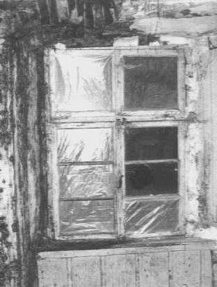
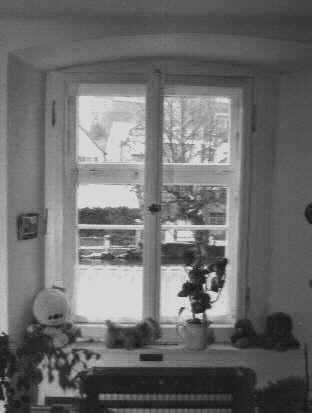
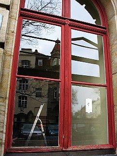
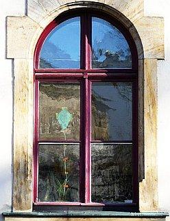
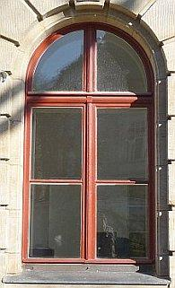
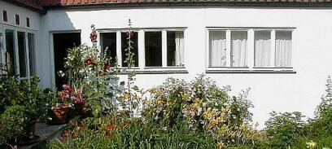
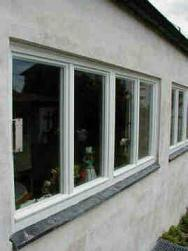
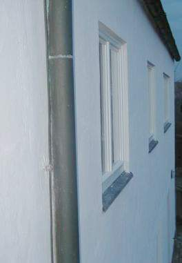

Wärmedämmung?
Wärmedämmung?
 Feuchte/Salz?
Feuchte/Salz?
 Heizung?
Heizung?
 Schimmelpilz wuchert?
Schimmelpilz wuchert?
 Altbautaugliche Verfahren und
Baustoffe
Altbautaugliche Verfahren und
Baustoffe
Barockfenster vor ...
... und nach Reparatur und Ergänzung durch Innenfenster
Der alte Fensterbestand, regelmäßig in handwerklicher Manier aus gut abgelagerten, astfreien und feinjährigen Hölzern gefertigt, ist früher vorwiegend mit harzfreien Leinölfarben gestrichen worden. Die modernen Folgeanstriche mit synthetischen Alkyd- und Acrylharzanstrichen haben dem alten wie auch dem neuen Holzfenster nicht immer genutzt. Da heutzutage fast immer nur von innen und außen an das Glas herangestrichen wird, verbleibt oder entsteht dort eine Kapillarfuge, die Kondensat und Regen einsaugt. Diese Feuchte verteilt sich dann im Holzquerschnitt, kann durch die Trocknungsblockade der Anstrichschicht nicht mehr flächig abtrocknen und drückt deshalb einerseits die Anstriche auf dem unteren Flügelrahmen innen und außen ab, andererseits kann in der feuchten Fuge zwischen Glas, Kittbett und Rahmenholz Pilzbefall entstehen, der sich dann "schwarz" bemerkbar macht. Wenn Altfenster instandzusetzen sind, und dies ist nach aller Erfahrung auch bei in Holz-, Glas- und Beschlag teilgeschädigten Konstruktionen technisch und wirtschaftlich meistens sinnvoll, kann entschieden werden, die noch brauchbaren, da intakten Holzbschichtungen zu erhalten und nur an geschädigten Stellen diese in geeigneter - also bestandskompatiblen Techniken und Beschichtungssystemen zumindest technisch korrekt oder insgesamt mit technisch überlegenen Farbsystemen von Grund auf neu zu beschichten. Wobei es bei beiden Varianten immer darauf ankommt, die Beschichtungsflächen so anzulegen, daß künftigem Wassereintritt in das beschichtete Holzprofil von innen und außen gleichermaßen vorzubeugen. Es muß also ein paar Millimeter in die Glasfläche hineingestrichen werden. Eine Kunst, die offenbar kein eiziger Maler, geschweige den Schreiner bzw. Tischler bzw. Fensterbauer beherrscht. Hierzu finden Sie hier weitere Hinweise.
Beispiel aus einer aktuellen (2009) Fenstersanierung:

1 +
2 +
3Das Problem
Für den Bauherrn des Altbaus beginnt das Fensterproblem immer mit falschen Aussagen seiner eigennützigen Berater (Schreiner, Fensterproduzenten, Planer, Bauphysiker): Das alte Fenster lohnt sich nicht aufzuarbeiten, es muß ein neues her. Das spart Planungsaufwand, Angebotskalkulation und bringt den Beratern einfach verdientes Geld.
Die simple, problemlose und dauerhafte Saniervariante - meistens ist nämlich nur der zu straffe, zu harte und zu spröde Kunstharzanstrich zum x-sten Mal zerstört und das Fensterholz und die Falzdichtung nach Abnahme der störenden Lackschichten relativ ok, die verzogenen Teile können durch Nachjustieren der Beschläge leicht gerichtet werden, die evtl. sinnvolle Zusatzdichtung von (meist durch Beschlagabnutuzung) verzogenen Fensterkonstruktionen kann durch Beschölagreparatur und nachfolgendem Einfräsen einer Dichtungsnut mit Einbau einer weichmacherfreien Spezialdichtung leicht nachgerüstet werden - wird verschwiegen:
Diese Arbeiten kosten selbst nach Stundennachweis nur einen Bruchteil des Neufensteraufwands. Obendrein lassen sich regelmäßig die Zusatzarbeiten im Gewändebereich vermeiden, da die Altfensterrahmen im eingebauten Zustand saniert werden können. Die Deponiegebühren für die wg. Kunstharzanstrich als teurer Sondermüll zu entsorgenden Altfenster entfallen ebenfalls.
Hier einige Vergleichskosten als Einheitspreise, ermittelt aus unseren bundesweit öffentlichen Ausschreibungen von Fensterreparaturen in neuen und alten Bundesländern:
Austausch oder Reparatur - Kostenvergleich (Stand 2004)
| AUSTAUSCH | . | . | . | . | REPARATUR | . | . | . | . | . | . | . |
| Leistung | Holz | Kunststoff | Leistung | Verbund/Kasten 4-flg. | Einfach 2-flg. | |||||||
| Kosten in EUR/qm Fensterfläche (Ansicht) | Kosten in EUR/qm Fensterfläche (Ansicht) | |||||||||||
| Einzelleistung | kumuliert | Einzelleistung | kumuliert | Einzelleistung | kumuliert | kumuliert | Einzelleistung | kumuliert | kumuliert | |||
| Altfenster ausbauen, entsorgen | 50 | 50 | Notfenster | 20 | 20 | |||||||
| ISO-Fenster, 1-flg., Dreh-/Kipp, herstellen, liefern, einbauen, SSK III dB 35 | 335 | 385 | 275 | 325 | Flügel ausbauen, in Wst. transportieren, einbauen | 28 | 48 | 18 | 38 | |||
| Putz- u. Malerarbeiten Leibung | 100 | 485 | 100 | 425 | Anstrich entlacken, erneuern mit Leinöl | einseitig | 80 | 128 | 80 | 118 | ||
| Verleistung außen | 40 | 525 | 40 | 465 | allseitig | 200 | 248 | 140 | 178 | |||
| Flügel/Beschläge richten | 85 | 213 | 333 | 85 | 203 | 263 | ||||||
| Wetterschenkel neu | 40 | 253 | 373 | 40 | 243 | 303 |
Die Schweinerei im Mietrecht, wonach ausgerechnet der Fensteraustausch gegen den Mieter wirtschaftlich, technisch und gesundheitlich benachteiligende sog. Isolierglas/Wärmeschutzfenster von ihm mittels Modernsierungsumlage refinanziert werden müssen, die in jeder Hinsicht günstigere Reparatur der guten alten Fenster jedoch nicht, hat den Austauschwahn leider massenhaft begünstigt. Die Folgen: Die deutsche Schimmelpest, keine Energieeinsparung, schlechterer Schallschutz, dauerkranke Bewohner. Da lacht sich die Fensterbranche aber herzlich ins Fäustchen. Und sagt ganz scheinheilig: Der böse Staat ist halt schuld. Und der Kunde, der das ja alles bestellt hat.
In der nachfolgenden Tabelle, beruhend auf der 2014 aktualisierten Studie "Im neuen Licht: Energetische Modernisierung von alten Fenstern" des Verbands Fenster und Fassade VFF und des Bundesverbands Flachglas BF, können wir erkennen, daß noch viele Millionen Einfachglasfenster ihrer Vernichtung durch den Energiesparwahn harren und sie mit ihrem formidablen "g-Wert" besser als die modernen Ersatzgläser das tagsüber kostenlose Licht ins Haus lassen. Werden wir also demnächst Energiesparfenster bekommen, nach deren Einbau auch tagsüber das elektrische Licht - selbstverständlich aus Energiesparlampen - eingeschaltet werden muß?
| Typ | Beschreibung | Menge Mio. qm | Hauptsächlich verbaut | Durchschnittlicher g-Wert in % |
| Typ 1 | Fenster mit Einfachglas | 21 | bis 1978 | 87 |
| Typ 2 | Verbund- und Kastenfenster mit Einfachglas | 48 | bis 1978 | 76 |
| Typ 3 | Fenster mit unbeschichtetem Isolierglas (Zweifachglas) | 220 | 1978-1995 | 76 |
| Typ 4 | Fenster mit Zweischeiben-Wärmedämmglas (low-E) | 274 | 1995-2008 | 60 |
| Typ 5 | Fenster mit Dreischeiben-Wärmedämmglas (low-E) | 32 | ab 2005 | 50 |
Ein besonders krankes Beispiel, wie es wirklich aussieht mit dichten und sich selbst zerstörenden Modern-Fenstern und der vermaledeiten Niedrigenergiebauweise können Sie im Forum von K.H. Ries studieren: http://www.khries.de/forum/showthread.php



Sowieso - und das wird dem Bauherrn auch nicht verraten - sind historische Fensterkonstruktion im Schall- und Wärmeschutz, in der Ausbeute von Licht und Solarenergie ebenso wie in der raumklimatisch noch wesentlicheren Entfeuchtungsleistung und Abführung von Raumluftschadstoffen neuen Fensterperversionen haushoch im Einzelvergleich und erst recht in der Summe der technischen Eigenschaften haushoch überlegen.
Im stern wird dieser Witz so behandelt: Auszug aus "Dämmen wir uns krank?"
Der unkritische Bauherr fällt so hilflos auf die falsche´Beratung - oft bewußte Irreführung des Verbrauchers - herein und läßt den technisch überlegenen Altfensterbestand gegen minderwertige teure neue Fenster ersetzen. Dabei kauft er als Katze im Sack Folgeschäden, die ihm seine "Berater" verschwiegen haben. Ein Urteil des LG Berlin vom 8.1.04, Az. 67 S 312/01 hat die hier gerade für Vermieter gegebene Brisanz klargemacht:
Der klagende Mieter bemängelte eine nachgewiesene Tageslichteinbuße in seiner Wohnung von sagenhaften 23 Prozent durch den Austausch seiner alten Fenster gegen Isolierglasfenster. Damit hat der Mieter eine nicht hinzunehmende "erhebliche Beeinträchtigung der Wohnnutzung" erlitten, der Fensteraustausch wurde als vom Vermieter "herbeigeführter Mangel" bewertet. Demzufolge wurde dem Mieter eine saftige Mietminderung zugesprochen: Drei Prozent je Fenster! Und er bekam einen "Mängelbeseitigungsanspruch": der Vermieter muß die "vor der Modernisierung vorhandene größere Glasfläche wieder herstellen." Wie das allerdings praktisch gehen soll, entzieht sich meiner Kenntnis. Neben jedes Fenster ein neue 25%-Lichtlucke durch die Fassade stoßen? Das fehlende Licht täglich in Säcken aus Schilda herbeitragen? Oder?
In ähnliche Richtung dann das Urteil wiederum des LG Berlin vom 6.11.2013, Az. 67 S 502/11: Er gab dem Mieter Recht, pro diesmal mit 28,85 Prozent lichtgemindertem Isolierglasfenster jeweils drei Prozent von der Miete abzuziehen. Drei mal acht Fenster mit Verkleinerung der Glasfläche: Satte 24 Prozent Mietminderung. Damit kann man sich wohl ein paar Mehrstündchen Elektrofunzelbeleuchtung leisten.Damit haben die schlauen Vermieter wohl nicht gerechnet, als sie anstelle der selbst zu tragenden Reparatur der alten Fenster den Mieter mittels "Modernisierungsumlage" für neue Isofenster drankriegen wollte. Ätschbätsch! Sicher weiß sein Fensterbauer wieder wohlfeilen, eben fensterbauer / -bäuerinnenschlauen Rat. Und wäre es nicht seine Pflicht und Schuldigkeit gewesen, um dem Vorwurf des vorsätzlichen Betrugs gem. § 263 Strafgesetzbuch StGB zu entgehen, dem Bauherrn vorher eine angemessene Risikoaufklärung angedeihen zu lassen und das fehlende Licht und das damit einhergehende Mieterrecht auf Mietminderung sachgerecht als unabdingbarer Werkmangel zu verraten, schriftlich mit Einschreiben und Rückschein? Oder dürfen Berliner Schreiner alles, wenn es ums Geschäftemachen geht? Haftung, Gewährleistung und Schadensersatz ausgeschlossen?
Wie oft hat der Fensterbauer schon raffiniert verschwiegen, daß sein Energiesparfenster gerade und ausgerechnet im Energiesparen schwerste Mängel hat: Sehr oft übertrifft ja die Solarausbeute eines simpelsten Einfachfensters dank perfektem g-Wert (Maß für Durchlässigkeit des Glases für kostenlose und energiereiche Solarstrahlung), die nur im Labor geltenden U-Werte und ihre nur rechnerisch vorhandenen Energiespareffekte auch rechnerisch bei weitem! Folge: Energieverlust und Geldverlust bei Austausch der guten Altsubstanz gegen teure "Energiesparfenster". Das nennt man normalerweise "Betrug".
Was der moderne Fensterkunde dann von der Materialqualität erwarten darf, geht auch aus den Wärmedehnzahlen der angepriesenen Rahmenmaterialien hervor (Quelle: Dipl.-Ing. Jürgen Estrich, Tischlermeister, iBAT Institut des Tischlerhandwerks, Hannover: "Anforderungen an die Ausführungen von Fugen und Bauanschlüssen" in: Bauhandwerk 12/2006):
| Material | Wärmedehnung in mm/m |
| Kunststoff dunkel (Plastik) | 2,4 |
| Kunststoff weiß | 1,6 |
| Aluminium | 1,2 |
| Holz (im Mittel) | 0,4 |
Themenlinks:
ARD Ratgeber Bauen & Wohnen - 8.5.04: Ist Fensteraustausch sinnvoll?
Deutscher Siedlerbund DSB e.V. - Streitthema Wärmedämmung: Contra
bau.de/forum/fenster-tueren/1846.htm#1092905449
Das virtuelle Online-Fenstermuseum - Das muß man gesehen haben!
Das Fenstermuseum in der Schweiz - zum Anfassen
Weitere Info und Tipps zu Fenster, Tischler, Schreiner, Holz, Gartenhaus, Gartenhäuser, Terrasse, Hobel, Elektrohobel, ...
Das Deutsche Schloss- und Beschlägemuseum in Velbert
 |
 (Hrsg. Konrad Fischer) (Hrsg. Konrad Fischer)Das Baudenkmal - Nutzung und Unterhalt Mit aktuellen Fachaufsätzen und Projektbeispielen zum Energiesparen und zur Strahlungsheizung/Temperierung. Schriftenreihe B der Deutschen Burgenvereinigung e.V. |